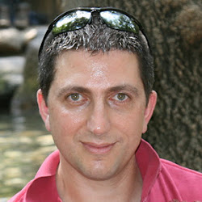

Fender
Preserving Correctness under Relaxed Memory Models
Home
People
People
Andrei Dan (ETH)
Yuri Meshman (Technion)
Martin Vechev (ETH)

Eran Yahav (Technion)
About
Fender is a collaboration of teams from ETH Zurich and Technion.
News
Talk at PLDI'12
Talk at SVARM'11
Talk at PLDI'11